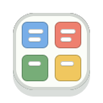

Chrome extension
Task Compass for Google Tasks
The purpose of Task Compass is to help users prioritize their own Google Tasks in an Eisenhower Matrix inside Chrome's side panel. Connect Google Tasks, choose a list, organize incomplete tasks by urgency and importance, and complete tasks without leaving the browser.
Purpose Of This App
Task Compass is a Chrome extension for viewing and organizing Google Tasks in an Eisenhower Matrix. It is designed only for task prioritization and task completion workflows requested by the user.
What It Does
- Loads Google Tasks lists after user authorization.
- Displays incomplete tasks from the selected list in a four-quadrant matrix.
- Lets users drag tasks between Do, Schedule, Delegate, and Eliminate.
- Marks tasks complete in Google Tasks when users choose to complete them.
- Lets users disconnect Google and request OAuth token revocation.
Privacy
Task Compass keeps Google Tasks as the source of truth. It stores only the selected task list, matrix classification metadata, and a temporary OAuth access token in Chrome extension storage. It does not use ads, analytics, or tracking.
Read the full privacy policy.
Independent Project
Task Compass is an independent productivity extension and is not affiliated with Google.